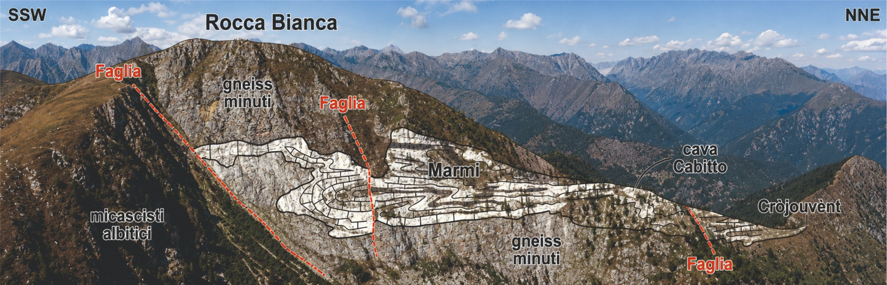
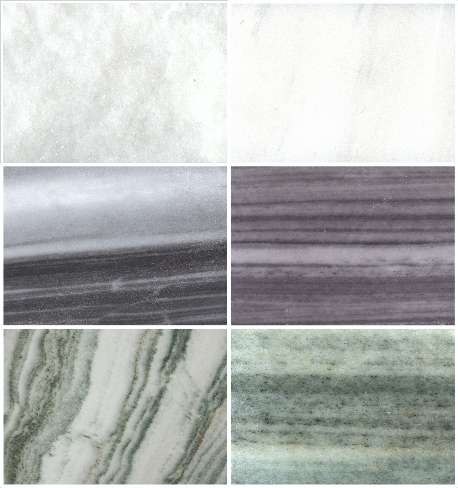
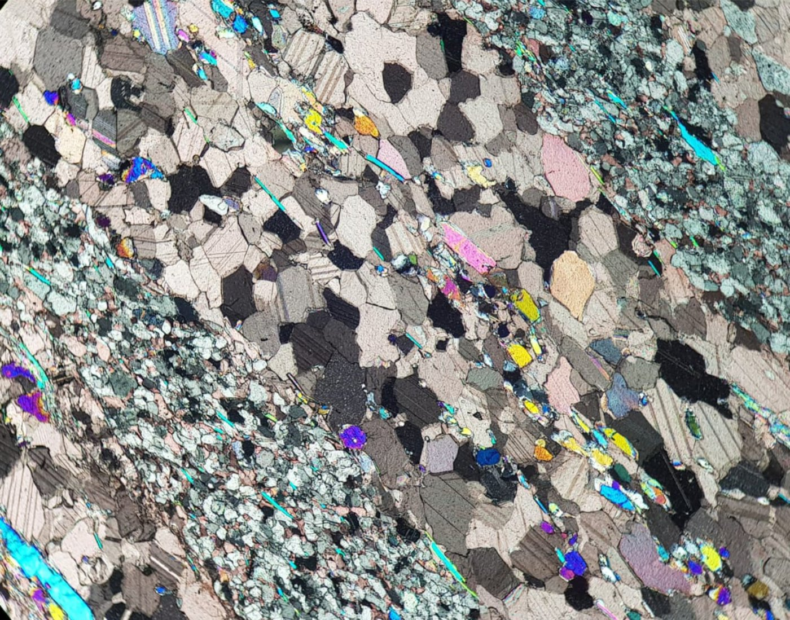

Geologia del territorio
Rilievi e documentazione degli affioramenti, dei rapporti litologici e delle strutture geologiche nei settori studiati.
PROGETTO DI RICERCA / ALPI COZIE
Geologia, archeometria e patrimonio storico dei materiali carbonatici della Val Germanasca e di Rorà.

VARIETÀ MACROSCOPICHE
Le osservazioni macroscopiche documentano differenze cromatiche, tessiture e strutture dei materiali studiati. Questi caratteri costituiscono una prima base descrittiva, da integrare con analisi petrografiche e mineralogiche per confronti e attribuzioni di provenienza.

01 / CONTESTO E OBIETTIVI
Il progetto studia i marmi delle Valli Valdesi attraverso l'integrazione di dati geologici, petrografici, mineralogici, geochimici e storico-documentari. L'attenzione si concentra sui giacimenti storici della Val Germanasca e sulle rocce carbonatiche del territorio di Rorà, nel contesto geologico del Massiccio Dora-Maira.
La ricerca mira a distinguere le principali varietà lapidee, approfondirne l'origine e le trasformazioni, ricostruire le attività estrattive e sviluppare criteri utili all'identificazione e alla provenienza delle pietre impiegate nell'architettura storica.
Tra le attività sul territorio rientrano il censimento delle antiche cave, il campionamento sistematico di marmi ornamentali e di rocce carbonatiche utilizzate per la calce, nonché la documentazione delle loro tracce nel costruito storico, incluse murature e intonaci delle baite. Queste indagini sono sviluppate anche in collaborazione con l’ing. Massimo Martelli.
Rilievi e documentazione degli affioramenti, dei rapporti litologici e delle strutture geologiche nei settori studiati.
Confronto tra campioni di cava e materiali storici, con dati petrografici, mineralogici, chimici e isotopici disponibili.
Ricostruzione delle cave, delle tecniche di coltivazione e dell'utilizzo dei marmi nel patrimonio costruito.
02 / METODI E MATERIALI

Il programma analitico integra descrizioni macroscopiche, microscopia ottica, diffrazione di raggi X con analisi quantitativa delle fasi (XRPD-QPA), analisi chimiche e osservazioni microstrutturali.
Specifici approfondimenti di ricerca, svolti anche nell'ambito di collaborazioni universitarie, considerano catodoluminescenza, geochimica degli elementi in traccia, isotopi stabili e altre tecniche specialistiche. L'impiego delle tecniche dipende dai materiali e dagli obiettivi del singolo studio.
Metodologie scientifiche ↗03 / RORÀ E LA CALCE STORICA
Un filone specifico riguarda i marmi e i calcescisti di Rorà, le testimonianze della produzione storica della calce e i residui rinvenuti presso gli antichi siti di cottura.
La caratterizzazione dei carbonati e dei residui di fornace viene affiancata a prove sperimentali di calcinazione e idratazione, allo scopo di interpretare il comportamento dei materiali e il rapporto tra materie prime locali e tecnologie tradizionali.
04 / PROGETTO EDITORIALE · WORK IN PROGRESS
Il secondo volume della collana Le Pietre delle Valli valdesi è in preparazione ed è dedicato alla geologia, alla storia estrattiva, alla caratterizzazione e agli impieghi dei marmi della Val Germanasca e di Rorà.
L'opera riunisce contributi di ambito geologico e archeometrico con studi sulla storia delle cave, sul patrimonio architettonico e sulle antiche tecnologie della calce.
Stato: manoscritto, dati scientifici e apparato iconografico in elaborazione e revisione. Il volume non è ancora pubblicato.
05 / PUBBLICAZIONI CORRELATE
Vola et al. — Journal of Archaeological Science: Reports, 45, 103562.
DOI ↗Vola, Natali, Martire, Frijia, Fornasier & Ardit — SGI–SIMP 2026.
Vola — La Beidana, 115, 29–53.